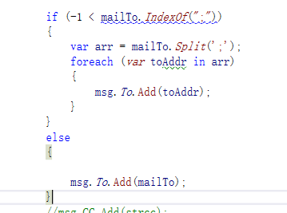
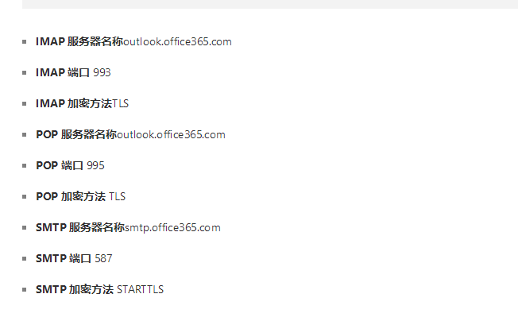
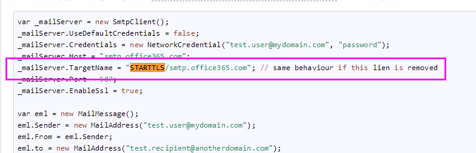

这是关于c#发送电子邮件（SMTP）的技术笔记，以”简报“形式呈现。
因为最后成功通过outlook.com发送了邮件，所以，我觉得还是有必要 记录一下其中的要点。
.net Framework 提供的两个类：SmtpClient和MailAddress
前者负责连接到服务器并且发送邮件，后者构成邮件的内容。
详细请参考：
https://www.cnblogs.com/xinyf/p/6294785.html
观察网易邮箱，多个接收人使用的是分号（【,】）分割，但是直接传递参数到【MailAddress.To】的【Add()】方法却会出现解析异常。
解决方案两个：
微软方面在这个方法的注释上说，多个接收人用逗号分割。
自己拆分成数组，然后循环【Add()】
我自己尝试第一个方案的时候，赶上了126邮箱认为我发广告屏蔽了我账号stmp。所以，我后来成功的时候是使用的第二个方案。

https://support.office.com/zh-cn/article/outlook-com-%E7%9A%84-pop%E3%80%81imap-%E5%92%8C-smtp-%E8%AE%BE%E7%BD%AE-d088b986-291d-42b8-9564-9c414e2aa040

没有添加端口的时候，返回的异常提示是：
SMTP 服务器要求安全连接或客户端未通过身份验证。 服务器响应为:5.7.57 SMTP; Client was not authenticated to send anonymous mail during MAIL FROM [AM0PR02CA0048.eurprd02.prod.outlook.com].
添加了端口之后，仍然没有通过，异常也变了。
SMTP 服务器要求安全连接或客户端未通过身份验证。 服务器响应为:5.7.57 SMTP; Client was not authenticated to send anonymous mail during MAIL FROM [AM0PR01CA0034.eurprd01.prod.exchangelabs.com]
于是进入下一个环节：
看到微软outlook强调：
SMTP 加密方法 STARTTLS
所以，就怀疑是跟STARTTLS有关。
根据下面这篇文章好像找到了 添加 这个选项的办法：
http://www.voidcn.com/article/p-mgynnypj-btn.html
也就是说这一行：

添加了之后问题仍然存在，并且异常和服务器返回的信息都和以前一样。
后来发现，还需要开启SSL
.EnableSsl = true;上面的链接里面已经是这么用的，但是当时我没看到，在搜到了这个问题的时候才注意到。
https://q.cnblogs.com/q/83815/
另外，测试的时候，UseDefaultCredentials选项开启和关闭都能发送成功。
完。